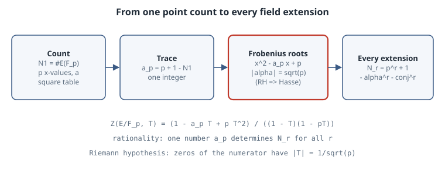

Counting Points mod p: Hasse’s Bound and the Weil Zeta Function
Counting Points mod p: Hasse’s Bound and the Weil Zeta Function
Thesis
Take a cubic like \(y^2 = x^3 + x + 1\) and count its solutions modulo a prime \(p\). You get roughly \(p\) of them, and the error is never larger than \(2\sqrt p\). That is Hasse’s theorem (1933). It is the simplest case of the Weil conjectures (1949), which say that point counts over all the finite fields \(\mathbb F_{p}, \mathbb F_{p^2}, \mathbb F_{p^3}, \dots\) are packaged in a rational generating function whose zeros sit on a “critical line”, exactly like the Riemann hypothesis. For curves Weil proved this himself. For general varieties it took Dwork (rationality, 1960), Grothendieck’s étale cohomology, and Deligne (the Riemann hypothesis, 1974). This chapter does not reproduce those proofs. It does something you can check in a few seconds: count points by brute force, then watch every prediction of the theory come true on real numbers.
Mental model

The curve. An elliptic curve \(E: y^2 = x^3 + ax + b\) over \(\mathbb F_p\) (\(p > 3\)) needs \(4a^3 + 27b^2 \not\equiv 0 \pmod p\), otherwise it is singular mod \(p\). Its group \(E(\mathbb F_p)\) is the affine solutions plus one point at infinity.
The heuristic. For each \(x\), the right-hand side is a square for about half the \(x\) values, and each non-zero square has two square roots. So \(N_1 = \#E(\mathbb F_p) \approx p + 1\). Write the error as the trace of Frobenius
\[ a_p = p + 1 - \#E(\mathbb F_p). \]
Hasse’s bound. \(|a_p| \le 2\sqrt p\). Equivalently, the polynomial \(x^2 - a_p x + p\) has complex-conjugate roots \(\alpha, \bar\alpha\) with \(|\alpha| = \sqrt p\).
The zeta function. Weil’s generating function is \(Z(E/\mathbb F_p, T) = \exp\big(\sum_{r \ge 1} N_r T^r / r\big)\), where \(N_r = \#E(\mathbb F_{p^r})\). For an elliptic curve it is
\[ Z(E/\mathbb F_p, T) = \frac{1 - a_p T + p T^2}{(1 - T)(1 - pT)} = \frac{(1 - \alpha T)(1 - \bar\alpha T)}{(1 - T)(1 - pT)}. \]
Taking the logarithm and comparing coefficients gives
\[ N_r = p^r + 1 - \alpha^r - \bar\alpha^r. \]
Read the conjectures off this formula:
- Rationality. \(Z\) is a ratio of polynomials, so the single integer \(a_p\) determines \(N_r\) for every \(r\).
- Functional equation. \(Z(1/(pT)) = Z(T)\), a symmetry that swaps the factors.
- Riemann hypothesis. The zeros of the numerator are at \(T = 1/\alpha, 1/\bar\alpha\), so \(|T| = p^{-1/2}\). Substituting \(T = p^{-s}\) puts every zero on \(\operatorname{Re}(s) = 1/2\).
The Riemann hypothesis is Hasse’s bound: \(|\alpha| = \sqrt p\) implies \(|a_p| = |\alpha + \bar\alpha| \le 2\sqrt p\).
How the angles are distributed. Write \(a_p = 2\sqrt p\cos\theta_p\). For a curve without complex multiplication (CM), the Sato–Tate theorem (Clozel–Harris–Shepherd-Barron–Taylor 2008, Barnet-Lamb–Geraghty–Harris–Taylor 2011) says \(\theta_p\) is distributed with density \(\tfrac{2}{\pi}\sin^2\theta\) on \([0, \pi]\). CM curves behave differently. For example, \(y^2 = x^3 - x\) has \(a_p = 0\) for every \(p \equiv 3 \pmod 4\), and \(y^2 = x^3 + 1\) has \(a_p = 0\) for every \(p \equiv 2 \pmod 3\).
Worked example
The script uses only the standard library. Affine points are counted with a table of how many square roots each residue has, so one pass over \(x\) suffices. For \(\mathbb F_{p^2}\) it builds the field as \(\mathbb F_p[i]/(i^2 - n)\), with \(n\) a quadratic non-residue, and counts by brute force over all \(p^2\) values of \(x\) and \(y\). That brute-force count is the independent check of the zeta-function prediction.
"""Counting points on elliptic curves over F_p: Hasse's bound, the Weil zeta function, and the Riemann hypothesis for curves."""
import cmath, math
def count_affine(a, b, p):
"""#{(x, y) in F_p^2 : y^2 = x^3 + a x + b}, using a table of square counts."""
sq = [0] * p
for y in range(p): sq[y * y % p] += 1
return sum(sq[(x * x * x + a * x + b) % p] for x in range(p))
def count_ext(a, b, p, r):
"""Points over F_{p^r} for r = 2, by brute force in F_p[i]/(i^2 - n) with n a non-residue."""
assert r == 2
n = next(c for c in range(2, p) if pow(c, (p - 1) // 2, p) == p - 1)
mul = lambda u, v: ((u[0]*v[0] + n*u[1]*v[1]) % p, (u[0]*v[1] + u[1]*v[0]) % p)
add = lambda *us: (sum(u[0] for u in us) % p, sum(u[1] for u in us) % p)
els = [(x, y) for x in range(p) for y in range(p)]
sq = {}
for y in els: s = mul(y, y); sq[s] = sq.get(s, 0) + 1
tot = 0
for x in els:
rhs = add(mul(mul(x, x), x), mul((a % p, 0), x), (b % p, 0))
tot += sq.get(rhs, 0)
return tot + 1 # + point at infinity
curves = [(2, 3), (-1, 0), (0, 1), (1, 1), (7, 11)]
primes = [5, 7, 11, 13, 101, 1009, 10007]
print(f"{'curve':>16} {'p':>6} {'#E(F_p)':>8} {'a_p':>5} {'2*sqrt(p)':>9} |a_p|<=2sqrt(p)")
worst = 0.0
for a, b in curves:
for p in primes:
if (4 * a**3 + 27 * b**2) % p == 0: continue # singular mod p: skip
N = count_affine(a, b, p) + 1 # + point at infinity
ap = p + 1 - N; worst = max(worst, abs(ap) / (2 * math.sqrt(p)))
if p in (5, 101, 10007):
print(f"y^2=x^3{a:+d}x{b:+d} {p:6d} {N:8d} {ap:5d} {2*math.sqrt(p):9.2f} {abs(ap) <= 2*math.sqrt(p)}")
print(f"max |a_p| / 2sqrt(p) over all {len(curves)}x{len(primes)} cases: {worst:.3f}\n")
# Weil: Z(E/F_p, T) = (1 - a_p T + p T^2) / ((1 - T)(1 - pT)). Predict #E(F_{p^2}) from #E(F_p) alone.
print("rationality check: #E(F_{p^2}) predicted from a_p vs brute force over F_{p^2}")
for a, b in [(2, 3), (1, 1), (7, 11)]:
for p in (5, 7, 11, 13, 17, 19, 23):
if (4 * a**3 + 27 * b**2) % p == 0: continue
ap = p + 1 - (count_affine(a, b, p) + 1)
alpha = (ap + cmath.sqrt(ap * ap - 4 * p)) / 2 # root of x^2 - a_p x + p
pred = p**2 + 1 - (alpha**2 + alpha.conjugate()**2).real
brute = count_ext(a, b, p, 2)
print(f" y^2=x^3{a:+d}x{b:+d} p={p:2d}: a_p={ap:+3d} |alpha|={abs(alpha):.4f}=sqrt(p)={math.sqrt(p):.4f}"
f" predicted {round(pred):4d} brute {brute:4d} {round(pred) == brute}")
# Sato-Tate: theta_p with a_p = 2 sqrt(p) cos(theta_p) is distributed like (2/pi) sin^2(theta) for non-CM curves.
a, b = 1, 1
sieve = bytearray([1]) * 20001; sieve[:2] = b"\0\0"
for i in range(2, 142):
if sieve[i]: sieve[i*i::i] = bytearray(len(sieve[i*i::i]))
ps = [p for p in range(5, 20001) if sieve[p] and (4 * a**3 + 27 * b**2) % p]
th = [math.acos((p + 1 - count_affine(a, b, p) - 1) / (2 * math.sqrt(p))) for p in ps]
bins = [0] * 6
for t in th: bins[min(5, int(t / (math.pi / 6)))] += 1
print(f"\nSato-Tate for y^2=x^3+x+1 over {len(ps)} primes < 20000 (bins of pi/6):")
for i, c in enumerate(bins):
lo, hi = i * math.pi / 6, (i + 1) * math.pi / 6
expect = (hi - lo - (math.sin(2*hi) - math.sin(2*lo)) / 2) / math.pi * len(ps)
print(f" [{i}pi/6,{i+1}pi/6) observed {c:5d} sin^2 law {expect:7.1f}")Output (CPython 3.15.0, about 3 s):
curve p #E(F_p) a_p 2*sqrt(p) |a_p|<=2sqrt(p)
y^2=x^3+2x+3 101 96 6 20.10 True
y^2=x^3+2x+3 10007 9846 162 200.07 True
y^2=x^3-1x+0 5 8 -2 4.47 True
y^2=x^3-1x+0 101 104 -2 20.10 True
y^2=x^3-1x+0 10007 10008 0 200.07 True
y^2=x^3+0x+1 5 6 0 4.47 True
y^2=x^3+0x+1 101 102 0 20.10 True
y^2=x^3+0x+1 10007 10008 0 200.07 True
y^2=x^3+1x+1 5 9 -3 4.47 True
y^2=x^3+1x+1 101 105 -3 20.10 True
y^2=x^3+1x+1 10007 10065 -57 200.07 True
y^2=x^3+7x+11 5 7 -1 4.47 True
y^2=x^3+7x+11 101 102 0 20.10 True
y^2=x^3+7x+11 10007 9831 177 200.07 True
max |a_p| / 2sqrt(p) over all 5x7 cases: 0.976
rationality check: #E(F_{p^2}) predicted from a_p vs brute force over F_{p^2}
y^2=x^3+2x+3 p= 7: a_p= +2 |alpha|=2.6458=sqrt(p)=2.6458 predicted 60 brute 60 True
y^2=x^3+2x+3 p=13: a_p= -4 |alpha|=3.6056=sqrt(p)=3.6056 predicted 180 brute 180 True
y^2=x^3+2x+3 p=17: a_p= -4 |alpha|=4.1231=sqrt(p)=4.1231 predicted 308 brute 308 True
y^2=x^3+2x+3 p=19: a_p= +0 |alpha|=4.3589=sqrt(p)=4.3589 predicted 400 brute 400 True
y^2=x^3+2x+3 p=23: a_p= +0 |alpha|=4.7958=sqrt(p)=4.7958 predicted 576 brute 576 True
y^2=x^3+1x+1 p= 5: a_p= -3 |alpha|=2.2361=sqrt(p)=2.2361 predicted 27 brute 27 True
y^2=x^3+1x+1 p= 7: a_p= +3 |alpha|=2.6458=sqrt(p)=2.6458 predicted 55 brute 55 True
y^2=x^3+1x+1 p=11: a_p= -2 |alpha|=3.3166=sqrt(p)=3.3166 predicted 140 brute 140 True
y^2=x^3+1x+1 p=13: a_p= -4 |alpha|=3.6056=sqrt(p)=3.6056 predicted 180 brute 180 True
y^2=x^3+1x+1 p=17: a_p= +0 |alpha|=4.1231=sqrt(p)=4.1231 predicted 324 brute 324 True
y^2=x^3+1x+1 p=19: a_p= -1 |alpha|=4.3589=sqrt(p)=4.3589 predicted 399 brute 399 True
y^2=x^3+1x+1 p=23: a_p= -4 |alpha|=4.7958=sqrt(p)=4.7958 predicted 560 brute 560 True
y^2=x^3+7x+11 p= 5: a_p= -1 |alpha|=2.2361=sqrt(p)=2.2361 predicted 35 brute 35 True
y^2=x^3+7x+11 p= 7: a_p= +5 |alpha|=2.6458=sqrt(p)=2.6458 predicted 39 brute 39 True
y^2=x^3+7x+11 p=11: a_p= +0 |alpha|=3.3166=sqrt(p)=3.3166 predicted 144 brute 144 True
y^2=x^3+7x+11 p=13: a_p= +4 |alpha|=3.6056=sqrt(p)=3.6056 predicted 180 brute 180 True
y^2=x^3+7x+11 p=17: a_p= -3 |alpha|=4.1231=sqrt(p)=4.1231 predicted 315 brute 315 True
y^2=x^3+7x+11 p=19: a_p= +4 |alpha|=4.3589=sqrt(p)=4.3589 predicted 384 brute 384 True
y^2=x^3+7x+11 p=23: a_p= -4 |alpha|=4.7958=sqrt(p)=4.7958 predicted 560 brute 560 True
Sato-Tate for y^2=x^3+x+1 over 2259 primes < 20000 (bins of pi/6):
[0pi/6,1pi/6) observed 69 sin^2 law 65.1
[1pi/6,2pi/6) observed 350 sin^2 law 376.5
[2pi/6,3pi/6) observed 701 sin^2 law 687.9
[3pi/6,4pi/6) observed 706 sin^2 law 687.9
[4pi/6,5pi/6) observed 369 sin^2 law 376.5
[5pi/6,6pi/6) observed 64 sin^2 law 65.1Reading it.
- Hasse. In every non-singular pair of the \(5 \times 7\) grid, \(|a_p| \le 2\sqrt p\). The largest ratio is \(0.976\), so the bound is close to sharp. At \(p = 10007\) the counts are within \(200\) of \(10008\).
- CM fingerprints. \(10007 \equiv 3 \pmod 4\) and \(10007 \equiv 2 \pmod 3\), so both CM curves land on \(a_p = 0\) exactly, which is \(p + 1 = 10008\) points. At \(p = 101 \equiv 1 \pmod 4\), \(y^2 = x^3 - x\) has \(a_p = -2 \neq 0\). At \(p = 5\) and \(p = 101\), both \(\equiv 2 \pmod 3\), \(y^2 = x^3 + 1\) is back at \(0\).
- Rationality and RH. For every prime tested, the count over \(\mathbb F_{p^2}\) predicted from \(a_p\) alone, \(p^2 + 1 - (\alpha^2 + \bar\alpha^2) = p^2 + 1 - (a_p^2 - 2p)\), matches the brute-force count of \((x, y) \in \mathbb F_{p^2}^2\). In every row \(|\alpha| = \sqrt p\) to the printed precision. Pairs where the curve is singular mod \(p\), such as \(y^2 = x^3 + 2x + 3\) at \(p = 5\) and \(p = 11\) (because \(4\cdot 8 + 27\cdot 9 = 275 = 5^2\cdot 11\)), are skipped, as the theory requires.
- Sato–Tate. \(y^2 = x^3 + x + 1\) has \(j = 1728\cdot 4/31\), which is not an integer, so it has no CM. Over 2259 primes, its six bins track \(\tfrac{2}{\pi}\sin^2\theta\) closely (701 and 706 observed against 687.9 expected in the middle bins, and 69 and 64 against 65.1 at the ends). The angle clusters near \(\pi/2\), which means \(a_p\) is usually small relative to \(2\sqrt p\).
Pitfalls
- Forgetting the point at infinity. Affine counts are \(N_1 - 1\). Off-by-one here breaks every identity above.
- Singular reductions. If \(p \mid 4a^3 + 27b^2\), the reduction is not an elliptic curve and \(a_p\) means something else (it lies in \(\{-1, 0, 1\}\)). Skip those primes or treat them separately.
- \(p = 2, 3\). The short form \(y^2 = x^3 + ax + b\) needs \(p > 3\). Use the general Weierstrass form for small primes.
- Reading Sato–Tate into CM curves. CM curves follow a different distribution, with half the primes at \(a_p = 0\). Check \(j\) or CM before testing \(\sin^2\).
- Floating point in \(\alpha^r\). The prediction is an integer. Compute \(\alpha^r + \bar\alpha^r\) with the integer recurrence \(s_r = a_p s_{r-1} - p\, s_{r-2}\) (where \(s_0 = 2\) and \(s_1 = a_p\)) when \(r\) is large, not with complex powers.
Exercises
- Use the recurrence \(s_r = a_p s_{r-1} - p s_{r-2}\) to predict \(\#E(\mathbb F_{p^3})\) for \(y^2 = x^3 + x + 1\) at \(p = 5\), then verify by building \(\mathbb F_{125} = \mathbb F_5[t]/(t^3 + t + 1)\) (check that this cubic is irreducible first).
- Verify the functional equation \(Z(1/(pT)) = Z(T)\) symbolically from the closed form.
- For \(y^2 = x^3 - x\), tabulate \(a_p\) for \(p \equiv 1 \pmod 4\) and check that \(a_p \equiv 2 \pmod 4\) in each case. Relate it to writing \(p = u^2 + v^2\).
- Find the curve–prime pair (with \(p < 1000\)) that maximises \(|a_p|/2\sqrt p\). How close to \(1\) can you get?
Sources
- H. Hasse, “Zur Theorie der abstrakten elliptischen Funktionenkörper I–III”, J. reine angew. Math. 175 (1936). The bound was announced in 1933.
- A. Weil, “Numbers of solutions of equations in finite fields”, Bull. AMS 55 (1949) 497–508. doi:10.1090/S0002-9904-1949-09219-4
- P. Deligne, “La conjecture de Weil. I”, Publ. Math. IHÉS 43 (1974) 273–307. doi:10.1007/BF02684373
- J. H. Silverman, The Arithmetic of Elliptic Curves, 2nd ed., Springer GTM 106 (2009), Ch. V (elliptic curves over finite fields).
- T. Barnet-Lamb, D. Geraghty, M. Harris, R. Taylor, “A family of Calabi–Yau varieties and potential automorphy II”, Publ. RIMS 47 (2011). This paper completes Sato–Tate for non-CM elliptic curves over \(\mathbb Q\).